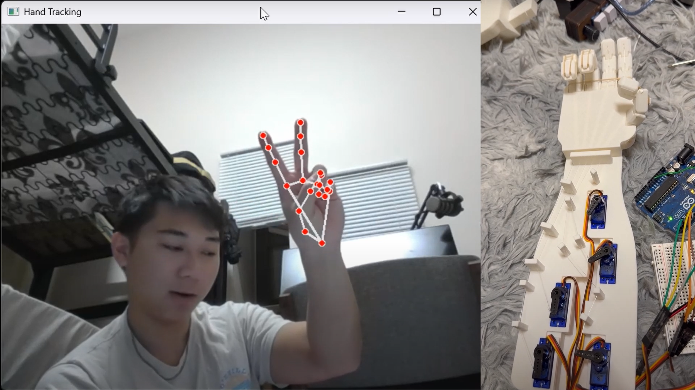

Bionic Hand using MediaPipe
Overview
This project uses computer vision and Google MediaPipe to detect hand gestures in real-time, translating them into servo motor movements to control a bionic hand. The setup allows intuitive gesture-based control without the need for wearable sensors.
